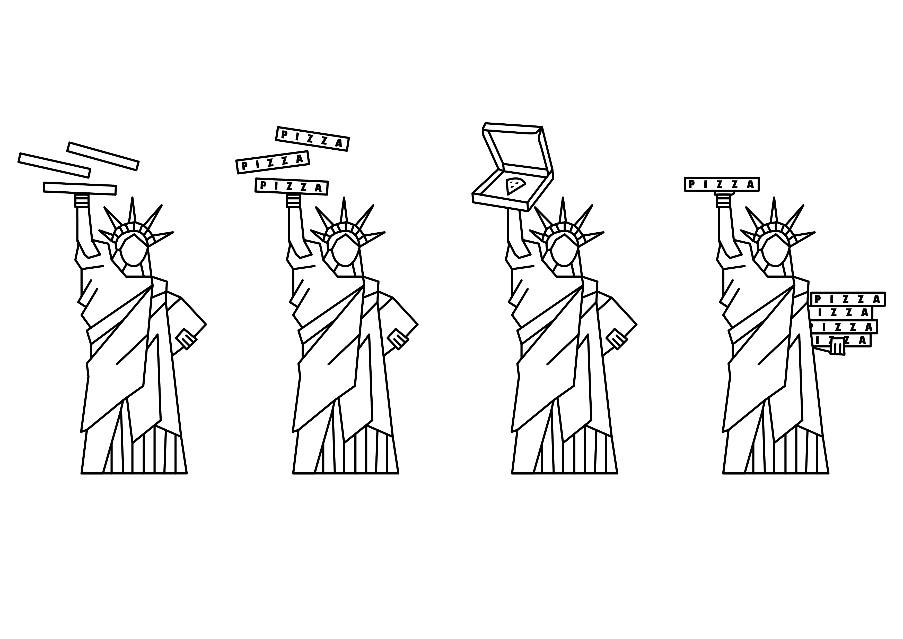

DEVELOPMENT
INITIAL DESIGNS
LOGO EXPLORATION

FONT/LAYOUT EXPLORATION
COLOUR EXPLORATION

This is a slither of the work that went into creating this logo and brand, I wouldn't want to put you through all of it!!!
For this brand I wanted to show off the idea of New York style pizza, which I believe I have done very succesfully through the Statue of Liberty being the focus point of the logo